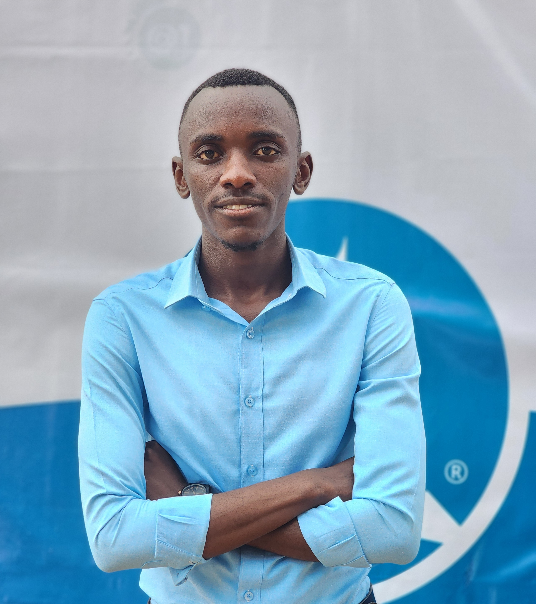

Meet Our Team
Kanyesigye Amon
Executive Director
Aruho Clinton
Head of Research

Asasira Nkahebwa
Finance Manager
Kyobutungi Shamirah
Community Outreach Lead
Natukunda Juliet
Grants manager
×

Learn more about our mission, vision, and the people behind WHRS.
WellHorizon Research Initiative Ltd (WHRI) is a Christian-founded, evidence-driven, community-cantered research and health initiative registered in Uganda in March, 2025. WHRI exists to transform community health behaviours, pioneer environmental health research, and promote holistic wellness rooted in Biblical principles of stewardship, compassion, and human dignity. WHRI operates as a non-profit research and advocacy organization, combining scientific excellence with faith-based values to address the preventable suffering burdening communities across Uganda especially in rural and underserved areas.
To empower communities through research, education, and holistic health programs that promote disease prevention, wellness, and godly living.
A transformed society where communities thrive in physical, mental, and spiritual wellness through evidence-based knowledge and Christ-centred living.
Faith in God, Excellence, Stewardship,Community Impact, Integrity & Transparency,Innovation,Service
WHRI was founded by Kanyesigye Amon, an Environmental Health Scientist inspired by deep Christian conviction and a lifelong burden to heal preventable suffering. Raised as the son of a Seventh-day Adventist pastor, Amon grew up witnessing both the spiritual hunger and health challenges affecting communities. His early dream was to become a medical doctor, but God redirected his path to the Makerere University School of Public Health, where he graduated with a degree in Environmental Health Science. Here he won his first $1,000 research grant (HEPI-SHSSU, 2023) for a study on Sickle Cell Disease awareness among university students. This experience ignited a passion to build a research-driven ministry that blends science, compassion, health education, and spiritual truth. This vision crystallized in 2024 to 2025 when Amon and the team launched the WellHorizon Research Initiative, which was formally registered on 26 March 2025 and now stands as a fast-growing Christian research and health organization.
Executive Director
Head of Research
Finance Manager
Community Outreach Lead
Grants manager
We work hand-in-hand with academic institutions, NGOs, and community organizations.